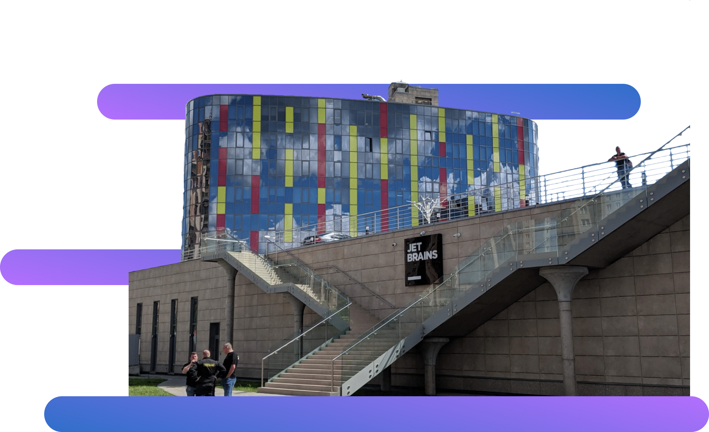

IntelliJ IDEA by
JetBrains
IntelliJ IDEA – один из продуктов компании JetBrains – международной компании, которая разрабатывает инструменты для разработки на языках Java, Kotlin, C#, F#, C++, Ruby, Python, PHP, JavaScript и многих других, а также средства командной работы

Продукты компании JetBrains
Среды разработки
IntelliJ IDEA, RubyMine, PyCharm, PhpStorm, WebStorm, AppCode, CLion, DataGrip, GoLand, Rider
Узнать большеKotlin
Язык программирования, разработанный компанией JetBrains. Google признала этот язык как приоритетный при разработе для Androis
Узнать большеTeam Tools
Облачные и локальные решения для командной работы, такие как Datalore, Space, TeamCity, YouTrack, Upsource, Qodana
Узнать больше